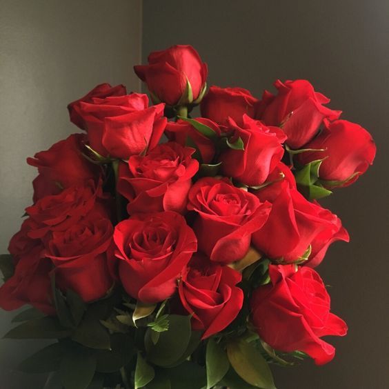
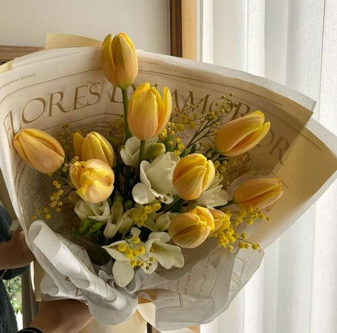

Rosa Rubiginosa
Mawar Persia
Mawar Persia (Rosa rubiginosa) adalah spesies mawar yang dikenal karena keindahannya dan aromanya yang khas. Bunga ini berasal dari daerah Eurasia, terutama ditemukan di wilayah yang lebih hangat di Eropa dan Asia Barat. Mawar Persia biasanya memiliki kelopak berwarna merah muda hingga merah, dengan aroma manis dan kuat, serta daun berwarna hijau tua yang biasanya memiliki duri. Tanaman ini dapat tumbuh di berbagai kondisi tanah, lebih menyukai sinar matahari penuh, dan sering ditemukan di padang rumput serta lahan terbuka. Selain keindahannya sebagai tanaman hias, mawar Persia juga sering digunakan dalam pembuatan minyak esensial dan produk aromaterapi. Dalam banyak budaya, mawar ini melambangkan cinta, keindahan, dan keromantisan, menjadikannya pilihan yang sempurna untuk taman atau sebagai bunga potong yang memberikan sentuhan elegan dan harum yang khas.

Tulip Lily-Flowered
Bunga Tulip
Tulip Lily-Flowered adalah salah satu jenis tulip yang terkenal dengan bentuk kelopak bunga yang ramping dan elegan, menyerupai bunga lili. Bunga ini memiliki kelopak yang runcing dan seringkali memiliki warna cerah, termasuk merah, kuning, dan putih, sering kali dengan kombinasi warna yang menarik. Tulip Lily-Flowered tumbuh dengan tinggi sedang, menjadikannya pilihan yang populer untuk taman dan pot hias. Bunga ini mekar pada musim semi dan memberikan sentuhan keindahan yang memikat, membuatnya menjadi favorit di kalangan pecinta bunga. Selain itu, tulip ini juga cocok untuk dipotong dan dijadikan rangkaian bunga.